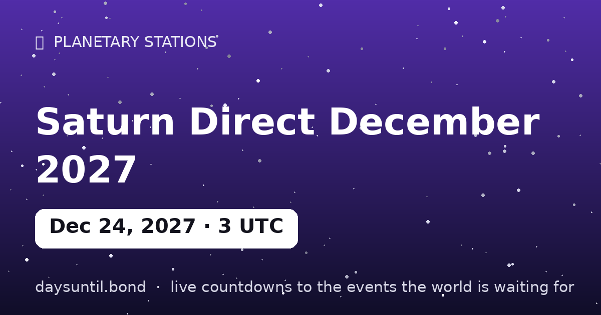

How Many Days Until Saturn Direct December 2027?
–days
–hours
–minutes
–seconds
Saturn Direct December 2027 falls on Friday, December 24, 2027.
📅 – weeks
💼 – weekdays
🛌 – weekend days
🗓️ – months (approx)

Quick facts
| Station moment (UTC) | December 24, 2027 · 03:01 |
|---|---|
| Zodiac position | 21°05' Aries |
| Direction | Turning D |
| Duration of phase | ~4.5 months |
About Saturn Direct December 2027
Saturn stations direct on December 24, 2027 at 03:01 UTC, at 21°05' Aries — computed to the minute with our own Keplerian ephemeris.
Saturn retrograde is the yearly four-and-a-half-month stress test of commitments, structures and responsibilities. The station is the turning point itself: the day the planet's apparent motion reaches zero before reversing. In tradition, days around a station carry the event's themes most intensely — decisions made at a station are said to set the tone for the whole season that follows.